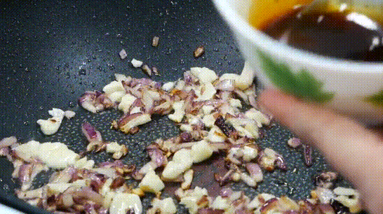
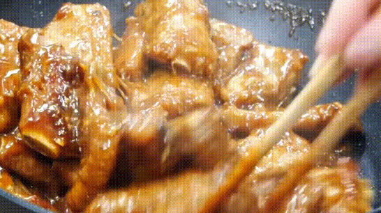

Pha nước ấm với 3 muỗng canh muối và 3 muỗng canh giấm rồi cho sườn vào rửa, chà xát thịt để ra hết chất dơ và máu. Rửa lại nhiều lần với nước cho đến khi nước không còn đục là thịt đã sạch.
Sau khi rửa xong bạn cắt thịt thành những miếng vừa ăn.
Trước khi chiên, bạn cho vào tô thịt 1 muỗng canh bột năng, 1 muỗng cà phê hạt nêm và trộn lên, làm cách này sẽ giúp thịt đậm đà và bột năng sẽ giúp giữ lại chất ngọt của thịt.
Khi dầu đã nóng thì cho thịt vào chiên ở lửa lớn cho vàng các mặt rồi vớt ra.
Làm nước sốt: cho vào chén 1.5 muỗng canh nước tương, 1 muỗng cà phê hạt nêm, 1 muỗng canh tiêu, 2 muỗng canh đường rồi trộn đều.
Làm nước chua ngọt: 1 muỗng canh nước mắm, 1 muỗng canh đường, 3 muỗng canh nước chanh rồi quậy cho đường tan.
Vẫn tiếp tục ở chảo chiên thịt, cho phần hành tím băm và tỏi băm vào phi cho vàng. Kế tiếp bạn cho phần nước sốt vừa pha vào nấu khoảng 1 phút rồi cho hết thịt đã chiên vào nấu ở lửa lớn, trộn đều để thịt ngấm nước sốt.
Cho 1 chén canh nước vào chảo rồi đậy nắp nấu tiếp thêm khoảng 15 - 20 phút ở lửa vừa.
Sau 15 - 20 phút, cho hỗn hợp nước chua ngọt vào rồi tiếp tục đun cho đến khi nước cạn bớt và đạt được độ sệt mong muốn, ngon nhất là khi nước sốt chỉ vừa bám đủ vào miếng sườn chứ không quá nhiều.
